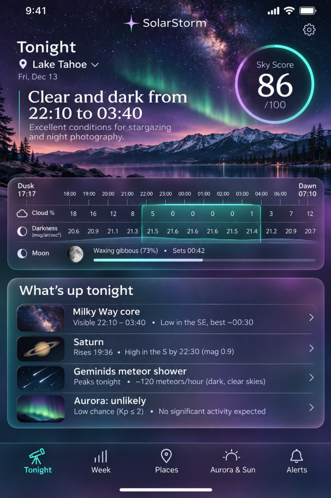
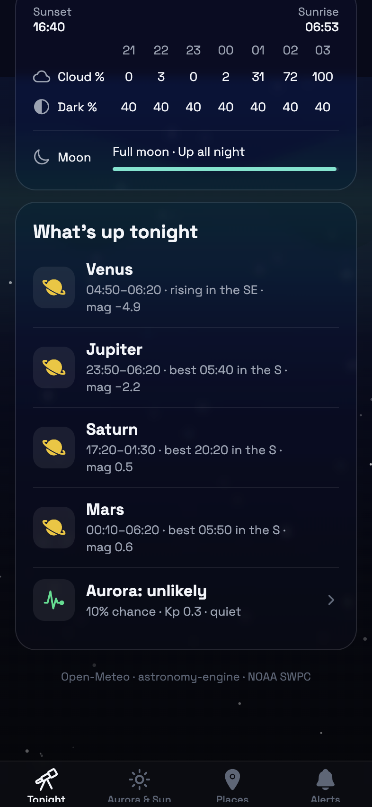
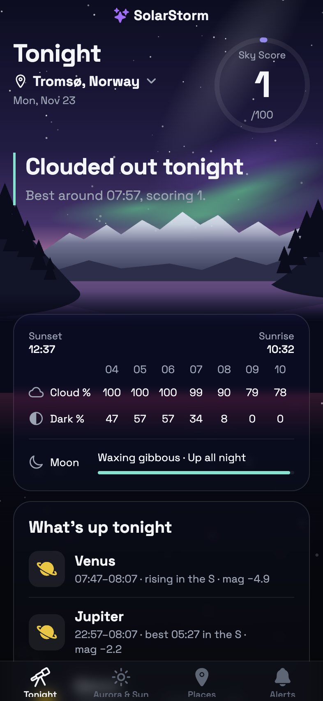
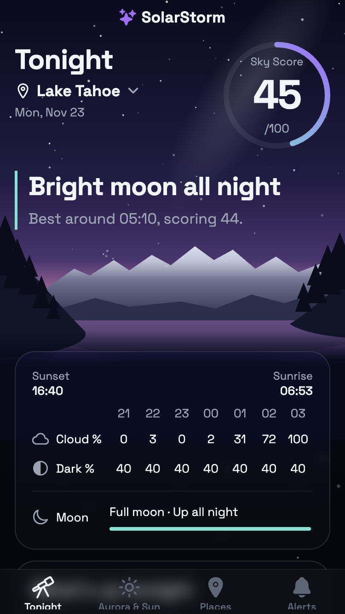
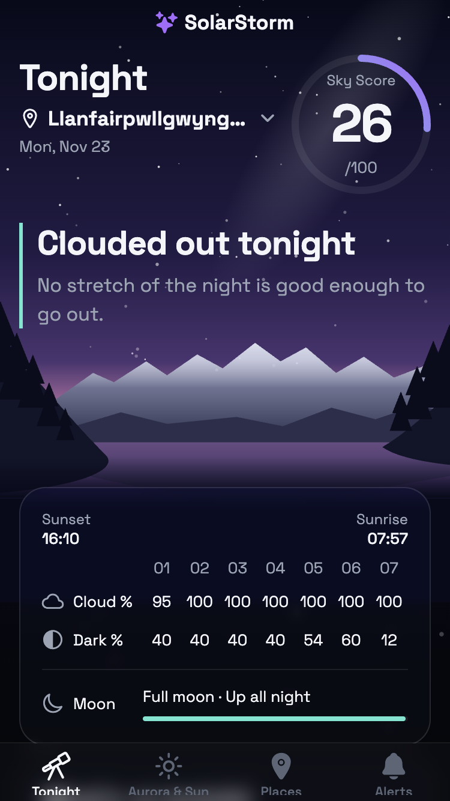

Tonight — concept C (left) and the built screen

Concept: Living sky
 Built, iPhone 16 Pro, Lake Tahoe (bright Moon tonight)
Built, iPhone 16 Pro, Lake Tahoe (bright Moon tonight)

Scrolled: What's up tonight

Aurora likely (simulated Kp 7): glow shows

iPhone SE

iPhone SE, long place name
Spec: ../tonight-spec.md